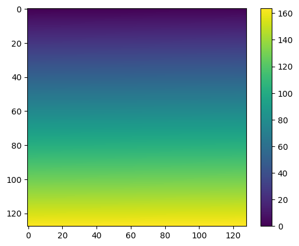
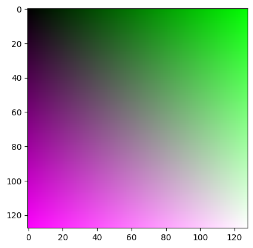

Builtin Data Types and Beyond
Contents
Builtin Data Types and Beyond#
# Lists:
# easy to insert, update, extend, difficult to delete from
x = list(); x = [1,2,3]; x=["A",2]; y = [x for x in range(10)];
print(y)
print(y[2])
print(len(x))
[0, 1, 2, 3, 4, 5, 6, 7, 8, 9]
2
2
# dicts:
# good as indices (finding data for a key) as the sorted nature is used
# in good languages, access is sorting, in Python it seems to be shadowed
x = dict(); x = {"key": 3, "age":20}
print(x["key"])
for key in x:
print(key) # this is the key, not a pair, not the value
print(x[key]) # this is how to iterate over values
3
key
3
age
20
{10: 'ten', 5: 'five'}
10
5
The role of sorting#
Why is accessing sorted information fast?
We are looking for some key x; If the data is sorted, we can look at the middle data. If it is larger than x, we look to the right. If it is smaller than x, we look to the left.
Each step, the search space (problem size) is divided by 2.
This generates a binary tree
all data ==>
left half | right half lh | rh lh | rh
The number of nodes in this tree depends on the depth of the tree (distance from the root to the leaves) O(2^n). Hence, given n data entries, the depth it at most log(n) if the tree is balanced
This is the reason, why dictionaries are faster at finding elements by key. For lists (as a comparison) you would have to look at half of the entries on average, hence O(n)
# set
x = set(); x = {'b','c'}
# in a set, you only have an element relation. Each element is once in the set or it is not. You can insert and remove elements.
print(x)
x = x | set(("a"))
print(x)
# you can't access a set reasonably with an index.
for y in sorted(x): # if you want it ordered, you can do so.
print(y)
{'b', 'c'}
{'b', 'a', 'c'}
a
b
c
Enumeration#
data = [2,3,5,7,9]
# let us make all numbers one number larger
print(data)
# Given an iteratable data item (like data below) enumerate generates pairs of an index increasing (counting)
# and the value. For us (0,2), (1,3), ...
for p in enumerate(data):
data[p[0]]=p[1]+1
print(data)
for index,value in enumerate(data):
data[index] = value-1
print(data)
x,y = [2,3]
print(x,y)
[2, 3, 5, 7, 9]
[3, 4, 6, 8, 10]
[2, 3, 5, 7, 9]
2 3
Numpy#
Numpy is a reimplementation of the core functionality of MATLAB for Python. It fast, reliable, efficient, easy to extend. It is used in almost all real-world libraries dealing with collections of numbers.
The key data structure is the NDarray (N-dimensional array, like a list, but with a single data type)
import numpy as np
x = np.array([1,2,3]);
print(x)
print(x[0])
# an ND array is collection of N data elements of the same type togehter with a shape tuple (a,b,c...) such that the product equals N
# The number of entries in the shape is called the dimension
x = [[1,2,3],[4,5,6],[7,8,9]]
print(x)
y = np.array(x, dtype=float)
print(y)
print(y.shape)
[1 2 3]
1
[[1, 2, 3], [4, 5, 6], [7, 8, 9]]
[[1. 2. 3.]
[4. 5. 6.]
[7. 8. 9.]]
(3, 3)
[0 1 2 3 4 5 6 7]
x = range(8)
y = np.array(x)
y = y.reshape(2,2,2)
print(y)
[[[0 1]
[2 3]]
[[4 5]
[6 7]]]
This is not a matrix. It is called a 2x2x2 tensor.
y[1,:,:]
array([[4, 5],
[6, 7]])
Numpy data type#
The ND array is a collection of values such that they have a certain shape. It is typically a tensor or matrix or a vector
A = np.array([[1,2,3],[4,5,6],[7,8,9]])
print(A)
print(A[:,0]) # vector representing the first column
[[1 2 3]
[4 5 6]
[7 8 9]]
[1 4 7]
x = [1,0,0] # this is not matrix multiplication, it is broadcasting.
print(A*x)
for row in A:
print(row*x)
# Takeaway Warning: Code might look correct, but broadcasting might create very wrong results.
# Broadcasting is the procedure of trying best to fit non-fitting things together.
[[1 0 0]
[4 0 0]
[7 0 0]]
[1 0 0]
[4 0 0]
[7 0 0]
print(A @ x)
[1 4 7]
Matrices as images#
from matplotlib import pyplot as plt
I = np.array([i/100 for i in range(128*128)]).reshape(-1,128)
print(I)
print(np.min(I),np.max(I))
plt.imshow(I)
plt.colorbar()
plt.show()
[[0.0000e+00 1.0000e-02 2.0000e-02 ... 1.2500e+00 1.2600e+00 1.2700e+00]
[1.2800e+00 1.2900e+00 1.3000e+00 ... 2.5300e+00 2.5400e+00 2.5500e+00]
[2.5600e+00 2.5700e+00 2.5800e+00 ... 3.8100e+00 3.8200e+00 3.8300e+00]
...
[1.6000e+02 1.6001e+02 1.6002e+02 ... 1.6125e+02 1.6126e+02 1.6127e+02]
[1.6128e+02 1.6129e+02 1.6130e+02 ... 1.6253e+02 1.6254e+02 1.6255e+02]
[1.6256e+02 1.6257e+02 1.6258e+02 ... 1.6381e+02 1.6382e+02 1.6383e+02]]
0.0 163.83

Check MATPLOTLIB galleries to find some suitable representations.
RGB Images#
An RGB image is an image optimized for screen display as the color screen of modern computers expects color values in three channels
red from 0..255
green from 0..255
blue from 0..255
It is common that RGB images in numpy / matplotlib are autoscaled or given with values ranging from [0,1]
# I is the monochrome image from before
# An RGB image is a NxMx3 tensor
X = np.stack([I,I,I]) # stacking has one argument. It is typically a list. Never write np.stack(A,B)
print(X.shape)
# The stack function took the given arguments, created a new axis (to the left) and added the information to each of the
# axis layers. So
# X[0,:,:] == I
# X[1,:,:] == I
# X[2,:,:] == I
# Unfortunately, we don't like this result, as the tensor shall be 128,128,3
X = np.stack([I,np.transpose(I),I],axis=-1)
print(X.shape)
plt.imshow(X / np.max(X))
plt.show()
(3, 128, 128)
(128, 128, 3)

# vstack and hstack
# Stacking in numpy was creating a new axis. What if we only want to append
rows = list()
for i in range(5):
row = i * np.ones(10)
print(row)
rows = rows + [row]
print(rows)
X = np.vstack(rows)
print(X)
# vice versa one can stack equal-sized columns with hstack (horizontal stack)
[0. 0. 0. 0. 0. 0. 0. 0. 0. 0.]
[1. 1. 1. 1. 1. 1. 1. 1. 1. 1.]
[2. 2. 2. 2. 2. 2. 2. 2. 2. 2.]
[3. 3. 3. 3. 3. 3. 3. 3. 3. 3.]
[4. 4. 4. 4. 4. 4. 4. 4. 4. 4.]
[array([0., 0., 0., 0., 0., 0., 0., 0., 0., 0.]), array([1., 1., 1., 1., 1., 1., 1., 1., 1., 1.]), array([2., 2., 2., 2., 2., 2., 2., 2., 2., 2.]), array([3., 3., 3., 3., 3., 3., 3., 3., 3., 3.]), array([4., 4., 4., 4., 4., 4., 4., 4., 4., 4.])]
[[0. 0. 0. 0. 0. 0. 0. 0. 0. 0.]
[1. 1. 1. 1. 1. 1. 1. 1. 1. 1.]
[2. 2. 2. 2. 2. 2. 2. 2. 2. 2.]
[3. 3. 3. 3. 3. 3. 3. 3. 3. 3.]
[4. 4. 4. 4. 4. 4. 4. 4. 4. 4.]]
GDAL#
If you are already interested in working more with images, install GDAL and try to load a Sentinel 2 scene as a numpy array
%pip install gdal
# While GDAL is annoyingly complex to maintain and install and full of historic code that you don't need
%pip install rasterio
# hopefully not depending on gdal
%pip install rasterio
Requirement already satisfied: rasterio in /opt/conda/lib/python3.10/site-packages (1.3.4)
Requirement already satisfied: affine in /opt/conda/lib/python3.10/site-packages (from rasterio) (2.3.1)
Requirement already satisfied: attrs in /opt/conda/lib/python3.10/site-packages (from rasterio) (22.1.0)
Requirement already satisfied: click-plugins in /opt/conda/lib/python3.10/site-packages (from rasterio) (1.1.1)
Requirement already satisfied: setuptools in /opt/conda/lib/python3.10/site-packages (from rasterio) (65.5.0)
Requirement already satisfied: certifi in /opt/conda/lib/python3.10/site-packages (from rasterio) (2022.9.24)
Requirement already satisfied: click>=4.0 in /opt/conda/lib/python3.10/site-packages (from rasterio) (8.1.3)
Requirement already satisfied: cligj>=0.5 in /opt/conda/lib/python3.10/site-packages (from rasterio) (0.7.2)
Requirement already satisfied: snuggs>=1.4.1 in /opt/conda/lib/python3.10/site-packages (from rasterio) (1.4.7)
Requirement already satisfied: numpy>=1.18 in /opt/conda/lib/python3.10/site-packages (from rasterio) (1.23.4)
Requirement already satisfied: pyparsing>=2.1.6 in /opt/conda/lib/python3.10/site-packages (from snuggs>=1.4.1->rasterio) (3.0.9)
Note: you may need to restart the kernel to use updated packages.
import rasterio
Lambda Expressions#
If you write code, very often you need to write small functions that are not of genreal usefulness. For example comparisons of values that are a bit different than what you expect.
This can all be done, see the example below
data = [["Martin",38], ["Elise",3], ["Chuck",20]]
for name,age in sorted(data):
print("%s is %d years old" % (name, age))
Chuck is 20 years old
Elise is 3 years old
Martin is 38 years old
But how do we sort by age? We introduce a key function. This function takes a full data entry (e.g., Martin,38) and returns the aspect we want to search by
def getage(x):
return x[1]
print(getage(data[0]))
for name,age in sorted(data, key=getage):
print("%s is %d years old" % (name, age))
38
Elise is 3 years old
Chuck is 20 years old
Martin is 38 years old
Now the sorting is correct, but when this is done in a large project, the distance in the source code between getage and the invocation of getage can be very large.
# Lambda functions to the rescue: It is possible to have simple expression-style functions locally defined in the source code
# Explain by example
for name,age in sorted(data, key=lambda x: x[1]):
print("%s is %d years old" % (name, age))
Elise is 3 years old
Chuck is 20 years old
Martin is 38 years old
sortbyname=True
if not sortbyname:
sortingkey = (lambda x: x[1])
else:
sortingkey =( lambda x: x[0])
for name, age in sorted(data,key=sortingkey):
print(name,age)
# THe good thing is we can use sortingkey multiple times.
Chuck 20
Elise 3
Martin 38